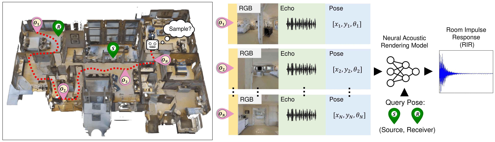

|
Arjun Somayazulu I'm a third-year Ph.D. student at UT Austin advised by Prof. Kristen Grauman. I'm broadly interested in computer vision and multi-modal perception, and my current line of research is in multi-modal video understanding using vision, language, audio, and 3D human pose. Previously, I received B.S degrees in Computer Science and Biomedical Engineering from Johns Hopkins, where I was advised by Prof. Archana Venkataraman. |
{kind=link}
News |
| May 2024 Our IROS 2024 Oral, ActiveRIR, is featured on TechXplore. |
| May 2024 Joining Meta FAIR in New York for the summer, working on video temporal grounding. |
Papers |
|
|
Learning Activity View-invariance Under Extreme Viewpoint Changes via Curriculum Knowledge Distillation
Arjun Somayazulu, Sagnik Majumder, Changan Chen, Kristen Grauman, arXiv 2025 (Under submission) arXiv |
|

|
ActiveRIR: Active Audio-Visual Exploration for
Acoustic Environment Modeling
Arjun Somayazulu, Sagnik Majumder, Changan Chen, Kristen Grauman, IROS 2024 (Oral) project | paper | press |

|
Ego-Exo4D: Understanding Skilled Human Activity from First- and Third-Person Perspectives
Kristen Grauman, Andrew Westbury, Lorenzo Torresani, Kris M. Kitani, Jitendra Malik, ... Arjun Somayazulu, ... Pablo Arbelaez, Gedas Bertasius, Dima Damen, Jakob Engel, Giovanni Maria Farinella, Antonino Furnari, Bernard Ghanem, Judy Hoffman, C.V. Jawahar, Richard Newcombe, Hyun Soo Park, James Matthew Rehg, Yoichi Sato, Manolis Savva, Jianbo Shi, Mike Zheng Shou, Michael Wray. CVPR 2024 (Oral) website | paper | video |

|
Self-Supervised Visual Acoustic Matching
Arjun Somayazulu, Changan Chen, Kristen Grauman, NeurIPS 2023 project | paper |

|
A Comparative Study of Data Augmentation Techniques for Deep Learning Based Emotion Recognition
Ravi Shankar, Abdouh Harouna, Arjun Somayazulu, Archana Venkataraman, ArXiv 2023 paper |
Teaching/Service |
| Spring 2021 - Course Assistant, EN.601.226 Data Structures |
| Fall 2021 - Course Assistant, EN.601.475/675 Machine Learning |
| Reviewer for CVPR 2024, IROS 2024, CVPR 2025, NeurIPS 2025, CVIU 2025 |